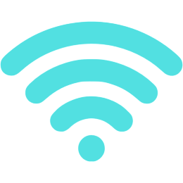

História
Fundada no início de 2020 impulsionada pela pandemia de Covid-19, a CodeInternet é uma empresa que fornece cobertura de internet fibra-ótica por toda a cidade de Guarapuava-PR, inicialmente cobrindo somente alguns bairros, mas com o crescimento e a popularização já cobre a cidade inteira oferecendo internet de qualidade!
